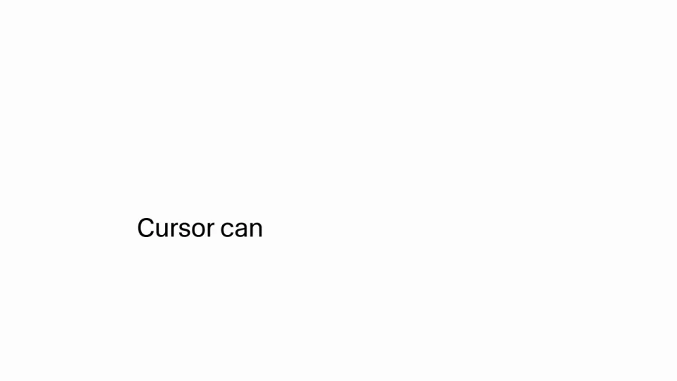
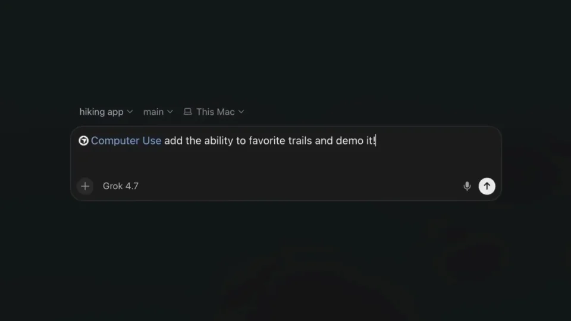
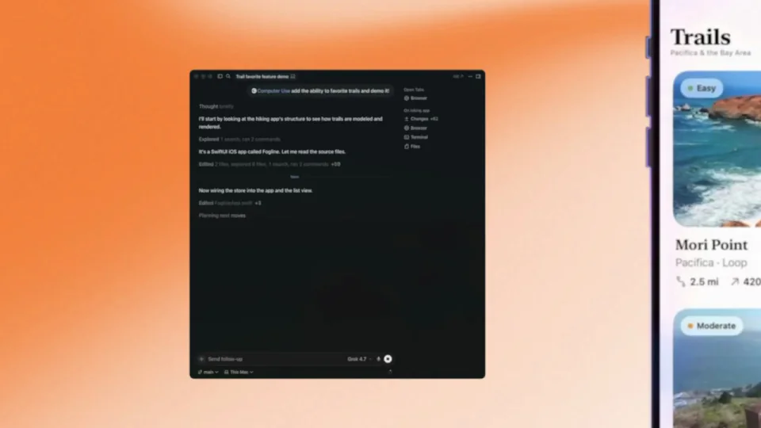
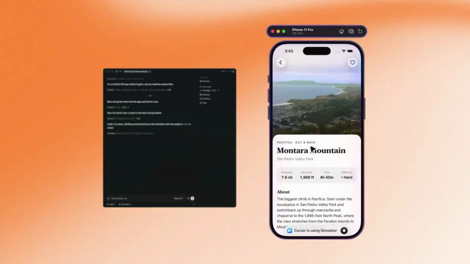
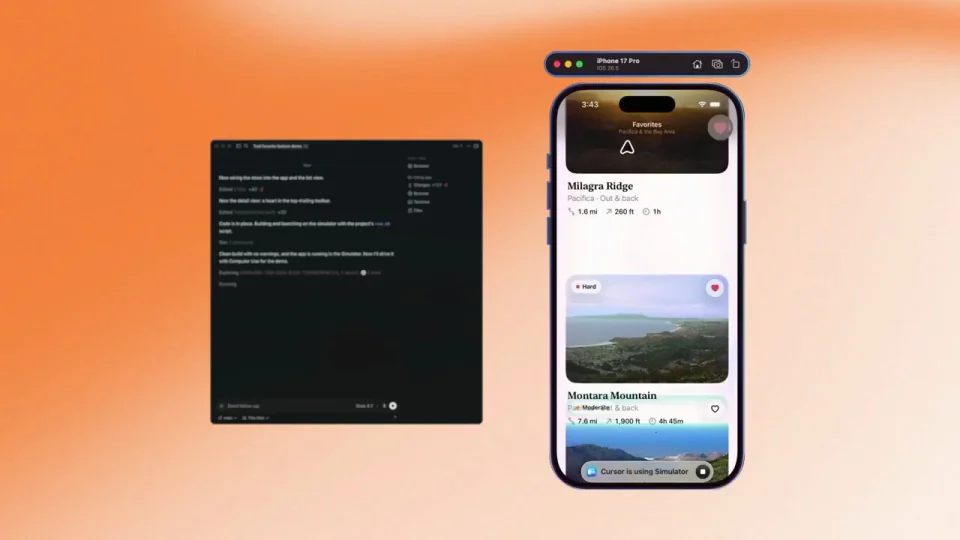

Cursor / V071
Cursor 能操控电脑
用同屏关系说明谁在控制、谁在响应。左侧代理接收任务，右侧手机模拟器完成一组可追踪的操作。
构图与编排 可播放 · 可替换内容
整体编排规则示例
查看 HTML 源码
<!doctype html><html lang="zh-CN"><meta charset="utf-8"><meta name="viewport" content="width=device-width,initial-scale=1"><title>Cursor 能操控电脑 · sequence</title><style>html,body{margin:0;width:100%;height:100%;overflow:hidden;background:#f5f5f1}canvas{display:block;width:100%;height:100%;object-fit:contain}</style><body data-mode="sequence"><canvas width="1000" height="600"></canvas><script src="data.js"></script><script src="common.js"></script><script src="scene.js"></script><script src="bridge.js"></script></body></html>画面元素指令框代理日志手机模拟器路线列表详情页收藏状态指针
MOTION LANGUAGE
动作与构图
局部动作 · 构图规则
01
先输入一个具体目标
功能主张之后输入电脑操作请求，代理开始执行，再出现手机模拟器。指令应指向可在短片里完成的任务，例如查看内容并收藏。
代理栏用深色，模拟器内容使用浅色，暖色背景连接两者。任务文本保持清晰无衬线字，应用内部标题沿用其自己的层级。
02
把操作连成一条路径
把操作连成一条路径规则示例
查看 HTML 源码
<!doctype html><html lang="zh-CN"><meta charset="utf-8"><meta name="viewport" content="width=device-width,initial-scale=1"><title>Cursor 能操控电脑 · sequence</title><style>html,body{margin:0;width:100%;height:100%;overflow:hidden;background:#f5f5f1}canvas{display:block;width:100%;height:100%;object-fit:contain}</style><body data-mode="clip" data-start="9" data-end="18"><canvas width="1000" height="600"></canvas><script src="data.js"></script><script src="common.js"></script><script src="scene.js"></script><script src="bridge.js"></script></body></html>列表滚动、打开详情、返回、收藏、进入收藏页依次发生。每次进入新页面，保留相同对象的名称或图片，让观众能认出仍是刚才那一项。
指针或触点先到达目标，随后才改变界面。代理日志只突出当前动作，不与手机同时滚动大段文字。
03
用结果状态收尾
最后推近收藏结果或完成状态，代理面板退为背景。
迁移到另一应用时，替换任务、列表、详情和最终结果；控制端与被控端的角色不变，避免把两边做成毫无关联的动画。
SEQUENCE
段落与节奏
点击段落，定位到上方编排示意。





画面参考 · 离散静帧
KEEP THE RELATIONSHIPS
制作其他主题
- 换应用时保留代理端与被控端两种角色
- 列表内容可换，用户动作和最后结果的因果不能省略
制作约束
指令框 / 代理日志 / 手机模拟器 / 路线列表 / 详情页 / 收藏状态 / 指针
- 左侧代理与右侧模拟器同屏，操作结果发生在受控应用中
- 滚动→详情→返回→收藏筛选是连贯操作，不是几张无关画面
- 末段推近收藏结果，反馈要与前面收藏操作对应